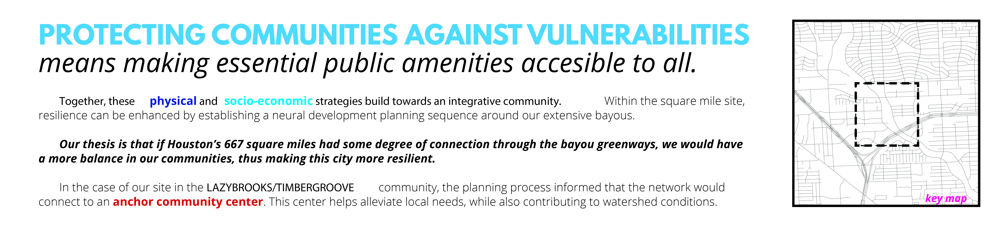
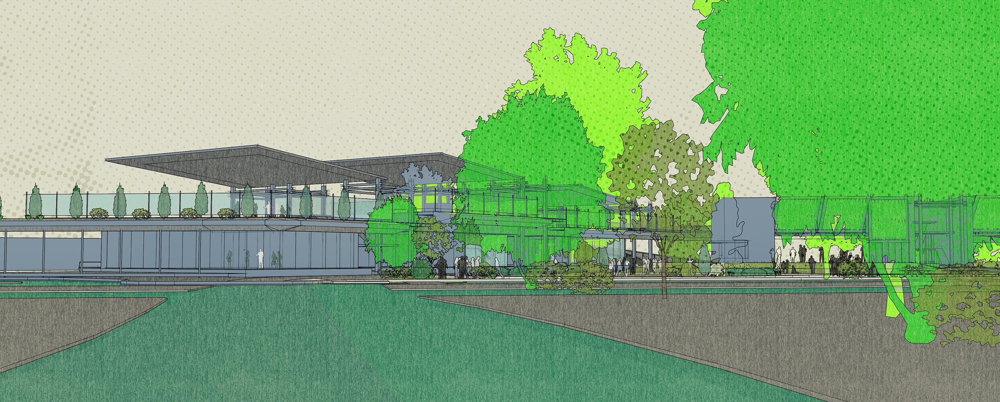
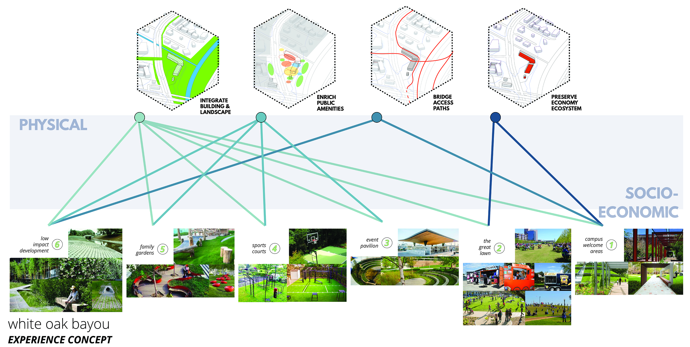

Connect. Extend. Bridge.
Sustainable Infills
showcase project
Land value drives development and investment. But in over-industrialized environments, it is up to the cities to secure infill areas from becoming overflow spaces. This project proposes a schema and infographic strategy to obtain public support.